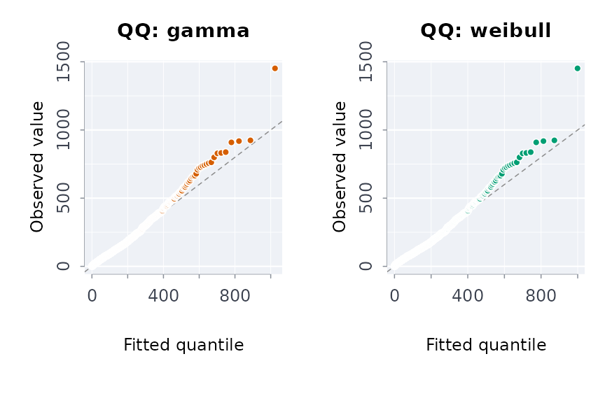

rmblapp() opens a dashboard over the package’s analyses
in your browser. It runs on your machine, in your R session. It needs
the shiny package.
rmblapp() # every tab opens on its own demo dataset
rmblapp(indiex("health")) # start with a data frame
rmblapp(capsule = "path/to/capsule")From a terminal,
rmbl app [PATH] [--port N] [--no-browser] does the same.
PATH is a CSV file or a capsule directory.
The page
The navbar groups the tabs in menus: Data (Describe, Distributions), Over time (Year over year, Rates, Trends), Causal and survey (Survey, Policy), Capsules (Drift, Capsule, Proof ledger) and Domains (First Nations, Métis and Inuit; Courts and corrections; Air pollution; Hawkes), then Report and Settings. At the right, Share this view gives a link that reopens the page with the same tab, data and form, and the switch sets light or dark mode.
Each analysis tab has its form in a sidebar (the data, the analysis and its arguments) and opens with its first analysis already run on a demo dataset. Its results are in cards:
- Value boxes: the headline estimate, its interval, n (with the p-value) and a verdict.
- Plot: the package’s plot for the result, or the estimates with their intervals when the function has no plot. It opens full screen, and downloads as PNG, SVG or the table as CSV.
- Method: the method in its help page’s words, its assumptions, what the numbers mean, and how to read the effect sizes and fit statistics the result carries (standardised differences, Cramér’s V, I-squared, correlations, ratios, the branching ratio, the time-rescaling test, overdispersion, the PSI).
- Diagnostics: the diagnostic plots the method has (QQ, PP and tail plots of a fit, the time-rescaling QQ plot of a Hawkes fit, observed and fitted values with residuals of a count trend, the clearance interval of a case flow, the fingerprint of a drift), the checks and secondary tables the function returns, and the rows by flag.
- Table, with the printed result below it, and the Reproducible R call.
Some views are linked. Choose a column name in the profile on the Describe tab to see its distribution. Point at the year-over-year plot to see the rows of that period. On the Drift tab, drag across the two densities of a column to see the share of each snapshot’s rows in that range.
The resampling analyses (bootstraps, permutations, simulations, the
Hawkes fits) run in a forked background process on Linux and macOS, so
the page stays live while they work; the Run button shows that it is
busy. A refusal appears in the page in the package’s words, with
explerr()’s note on where it comes from, and as a notice in
the corner.
Every analysis shows the R call it ran, and it runs exactly that call. Copy the call into a script and you get the same result.
Data
Every tab opens on a dataset from rmbldemo(): made-up,
seeded data shaped like what the tab reads. They are the same on every
call.
rmbldemo()
#> name rows
#> 1 court 576
#> 2 offences 1440
#> 3 offences_annual 120
#> 4 survey 1200
#> 5 fnmi 128
#> 6 otis 144
#> 7 air 2016
#> 8 hawkes NA
#> 9 drift 3000
#> 10 waits 1000
#> 11 ledger 120
#> description
#> 1 Court caseload panel, 16 courts by 36 months, a staggered reform
#> 2 Monthly offence counts by area, seasonal, with a step down in April 2020
#> 3 The offence counts by area and year, with population
#> 4 Stratified two-stage survey with design and bootstrap replicate weights
#> 5 Published health table by distinction, suppressed cells and quality flags
#> 6 Custody admissions and days by institution and year (stock and flow)
#> 7 Hourly NO2 at six monitors around a stack, with the wind
#> 8 Self-exciting event stream over one year
#> 9 Two snapshots of one table, reference and current, with drift
#> 10 Days to disposition and appearances of 1,000 court cases
#> 11 Proof ledger of 120 theorems and the functions they coverThe court panel, for example, has a reform adopted by eight of sixteen courts at four different months. It lowers the median delay by 12 days, and the courts share a trend, so the parallel-trends assumption holds:
court <- rmbldemo("court")
plndid(court, unit = "court", time = "month", y = "delay", trtd = "reformed")
#> ╭── Difference in differences ────────────────────────────────────────────────╮
#> │ Method fixed-effects least squares, cluster-robust (CR1) errors │
#> │ Observations 576 │
#> │ Clusters 16 │
#> │ Confidence 95% │
#> │ Comparison mean 100 │
#> │ Relative effect -12.6% of the comparison mean │
#> │ │
#> │ Estimates │
#> │ term estimate se 95% CI t p_value │
#> │ ------- -------- ------ ---------------- ------ ------- │
#> │ treated -12.61 0.4724 [-13.62, -11.61] -26.70 < 0.001 │
#> │ │
#> │ The policy's effect on the outcome is -12.61 (95% interval [-13.62, │
#> │ -11.61]): the interval excludes 0, so the data distinguish it from no │
#> │ effect. │
#> │ │
#> │ The comparison mean is the pre-period mean outcome of the units not │
#> │ (yet) treated. │
#> ╰─────────────────────────────────────────────────────────────────────────────╯The Data sidebar (the arrow at the left) takes a
demo dataset, a CSV file (plain or gzip), a capsule directory, or a
table from data.rmorie.com, and Load all demos loads
every demo dataset so you can switch between them. Data chosen there is
used by every tab (“The dataset chosen at the left” in a tab’s Data
menu). For a capsule it loads the pinned data file. For data.rmorie.com,
sign in first with rmbl login. The app never holds your
data key: dload() reads it from where
rmbl login stored it.
The tabs
-
Describe:
profcols(),freqtbl(),cortbl(),mahaoutl()andmissgrid(), plus ridgelines, distribution functions, violins, hexagonal bins and concentration curves. -
Distributions:
dstfit()fits candidate distributions and ranks them, with density, QQ, PP and tail plots. You can draw a synthetic sample from the best fit withmksyncol(). -
Year over year:
yoy()with the period, value, groups, the smallest base for a percentage and which direction is better. Download the result as theyoyhtml()page. -
Rates:
rtcalc(),ratechg()andshrs(). A rate per population and a share of a total stay apart. -
Trends:
trndtst()(Mann-Kendall with the Theil-Sen slope),stepchg(),cnttrnd(), a calendar heatmap, a horizon chart, small multiples and a bump chart. -
Survey:
svydes()with weights, strata, clusters or replicate weights, thensvyest()orsvycmp(). -
Policy: the panel designs on unit-by-period data,
from
plndid()andevstudy()tosyndid(),wcb(),plnpwr()andtse(). The tab names the assumption they share: without the policy, the outcomes would have moved in parallel. Read the pre-period coefficients and the cohort trends before the estimate. -
Drift:
cpsdrft()on two snapshots, and the app ofdrftapp()for two CSV files. -
Capsule: a capsule’s provenance, manifest,
attestation and bundle files (a demo capsule is built in a temporary
directory). Its buttons run
vrfcps()andcpschk(), orcpsrfrsh(). -
Proof ledger: a ledger from the demo, a file, a
capsule or an installed package, its theorems and
ldgrchk()’s rows. -
First Nations, Métis and Inuit: Statistics Canada’s
tables as
indiex()ships them, a demo table in the same layout, or your own. Each distinction is reported on its own. Suppressed cells stay suppressed, and the quality flags are shown. The tab states the OCAP® and CARE principles and links the source tables. -
Courts and corrections:
caseflow(),stkflow(),clrdcmp(),dispmix(),lifetbl(),crmdens(),knoxtst(),rgnmapintg(), and the SIU readerssiuprs()andsiuso()on pasted text. -
Air pollution: a plume map (
plmfld()), the demo monitors’ readings, a downwind profile and receptor concentrations (gplume()), the concentration-response functions,polbrdn()andvrfpol(). -
Hawkes:
chwkfit()withplothwk()(intensity, time-rescaling check, branching tree),chwksim()andchwkjit(). - Report: what you added from the tabs. Save it as one HTML page with the plots as inline SVG, as Markdown, or copy it as a GitHub comment.
- Settings: the theme (light, dark or as the system is set), printed digits, and the seed the seeded analyses use.
The same work in a script
What the Distributions tab runs on its demo data:
wait <- rmbldemo("waits")$days
fit <- dstfit(wait, nboot = 50)
fit$table[, c("rank", "family", "aic", "ks")]
#> rank family aic ks
#> 1 1 gamma 12144.46 0.04754282
#> 2 2 weibull 12163.66 0.05231905
#> 3 3 lognormal 12166.91 0.04705977
#> 4 4 exponential 12196.68 0.07886116
#> 5 5 t 12571.14 0.13837486
#> 6 6 normal 12934.52 0.16103623
#> 7 7 pareto 14258.49 0.41016644
plot(fit, which = "qq", fams = c("gamma", "weibull"))
And what the Proof ledger tab runs on the sample ledger:
led <- ldgrread(system.file(
"extdata",
"ledger_sample.json",
package = "rmoriebricklayer"
))
led
#> ╭── Proof ledger rmoriebricklayer sample ledger ──────────────────────────────╮
#> │ Theorems 3 theorems (1 proved, 1 sorry, 1 axiom) │
#> │ Source https://github.com/rootcoder007/rmorie-proofs @ 0123456789ab │
#> │ Lean v4.12.0 │
#> │ File /tmp/Rtmp6i9Dbh/temp_libpath1ede396504b/rmoriebricklayer/extdat │
#> │ a/ledger_sample.json │
#> │ │
#> │ id theorem status sorry │
#> │ --------------- ------------------------------ ------ ----- │
#> │ gini-equal Rmorie.Gini.gini_const_eq_zero proved 0 │
#> │ lorenz-monotone Rmorie.Gini.lorenz_monotone sorry 1 │
#> │ float-round Rmorie.Float.round_nearest axiom 0 │
#> │ │
#> │ 1 of 3 theorems are proved; the others are 1 axiom and 1 sorry: not │
#> │ proofs yet. │
#> │ │
#> │ A theorem marked proved has a machine-checked proof with no sorry; │
#> │ ldgrchk() checks that and that the R functions it covers exist. │
#> ╰─────────────────────────────────────────────────────────────────────────────╯
ldgrchk(led)[, c("check", "ok", "severity")]
#> check ok severity
#> 1 proved: gini-equal TRUE error
#> 2 covered: gini-equal rmoriebricklayer::ginicoef TRUE error
#> 3 check: gini-equal TRUE error
#> 4 proved: lorenz-monotone FALSE error
#> 5 covered: lorenz-monotone rmoriebricklayer::lorenzc TRUE error
#> 6 proved: float-round FALSE warnA ledger records the theorems of a formal-proof build and the
functions each one covers. Any package can ship one in
inst/ledger/, and the tab finds it there. A theorem counts
as proved only when no sorry remains. An axiom is assumed,
not proved, so it shows as a warning. A ledger pinned in a capsule
(provenance kind: "ledger") is checked by
rmbl verify too.